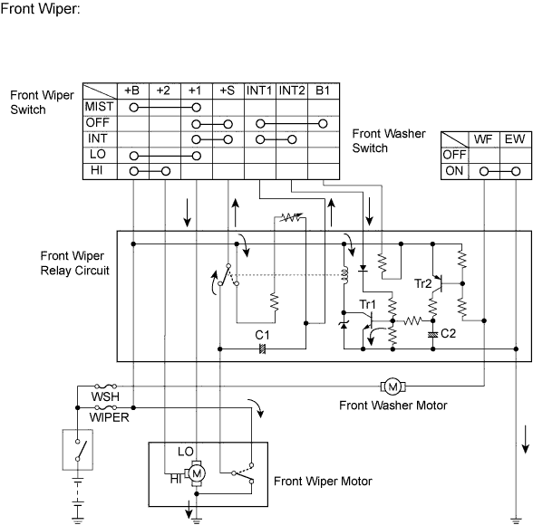
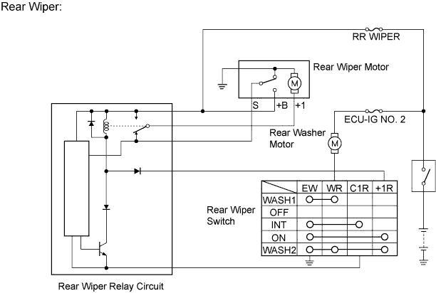

WIPER AND WASHER SYSTEM (w/o Rain Sensor) > SYSTEM DESCRIPTION |
| WASHER LINKED OPERATION |
This system operates the front wipers at low speed immediately after a jet of washer fluid when the front washer switch is turned on for 0.3 seconds or more. The system operates the front wipers at low speed for approximately 2.2 seconds and then stops operation when the washer switch is turned on for 1.5 seconds or more.
| INTERMITTENT OPERATION |
The system operates the front wipers once in approximately 1.6 to 10.7 seconds when the front wiper switch is turned to the INT position. The intermittent time can be adjusted from 1.6 to 10.7 seconds by using the intermittent time adjust dial.
If the front wiper switch is turned to the INT position, current flows from the already charged capacitor C1 through terminals INT1 and INT2 of the front wiper switch to Tr1 (transistor). When Tr1 turns on, current flows from terminal +S of the front wiper switch to terminal +1 of the front wiper switch, to terminal +1 of the wiper motor, to the wiper motor and finally to ground, causing the wiper motor to operate. At the same time, current flows from capacitor C1 to terminal INT1 of the front wiper switch and then INT2. When the current flow from capacitor C1 ends, Tr1 turns off to stop the relay contact point and halt the wiper motor.

| REAR WIPER INTERMITTENT OPERATION (w/ Rear Wiper) |
When the rear wiper switch is turned to the INT position, current flows from the capacitor of the intermittent operation control circuit to turn on the transistor. Current flows from terminal +B of the rear wiper relay, to the relay coil, to the transistor, to terminal C1 of the rear wiper relay, to terminal C1R of the rear wiper control switch and finally to ground, causing the relay contact point to turn on.
